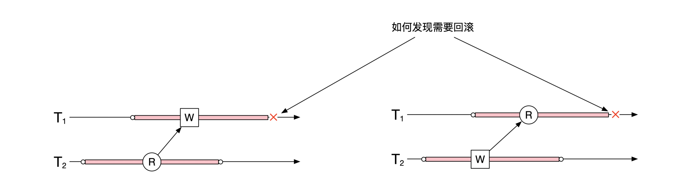
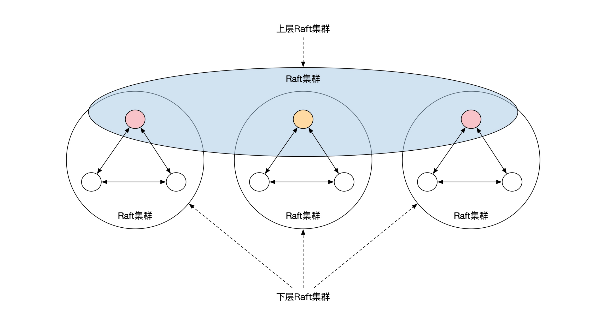
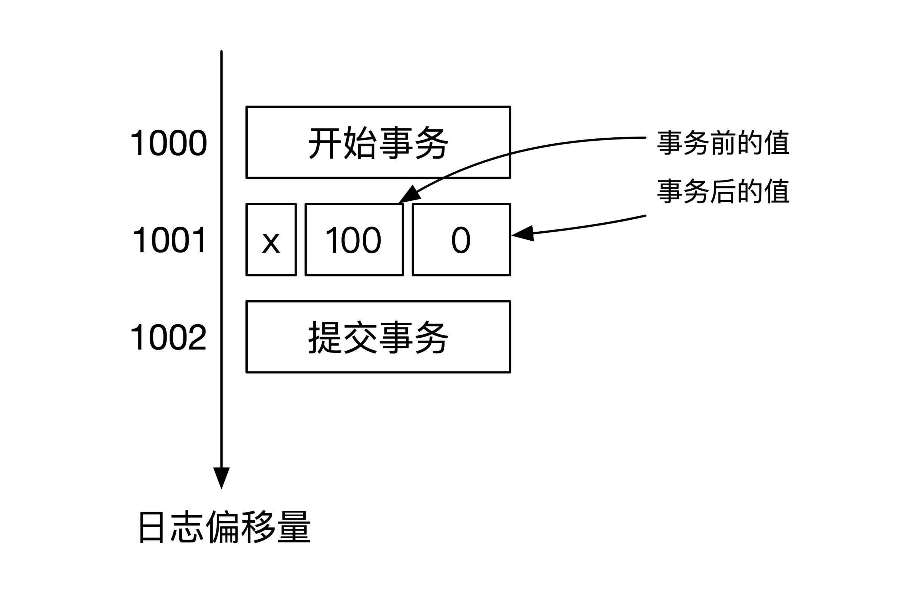
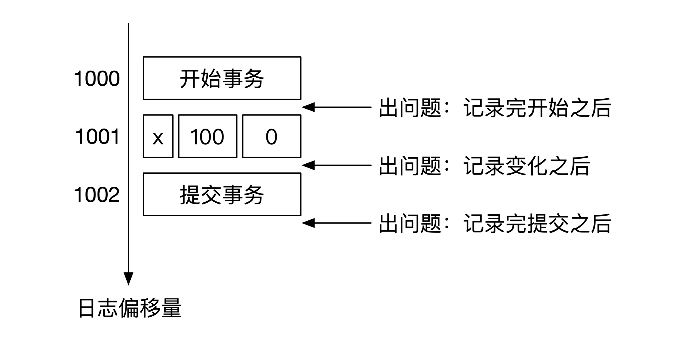
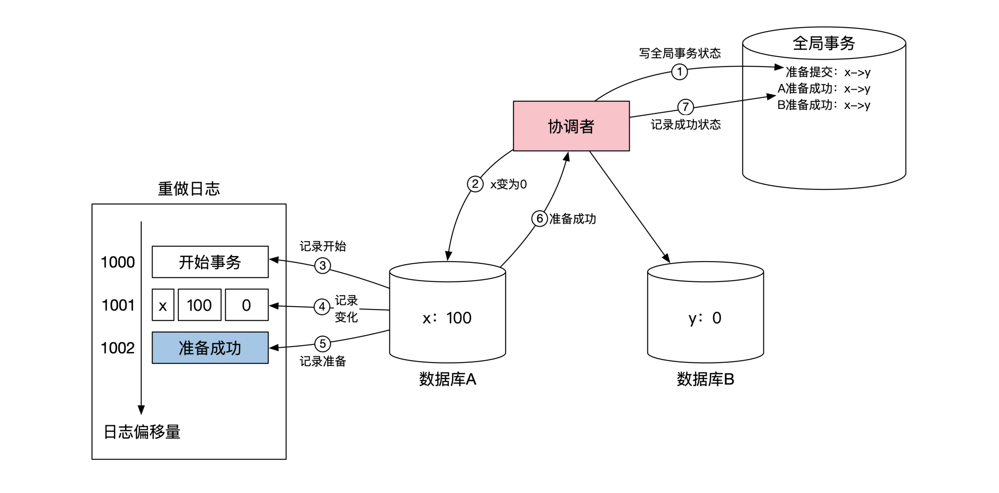
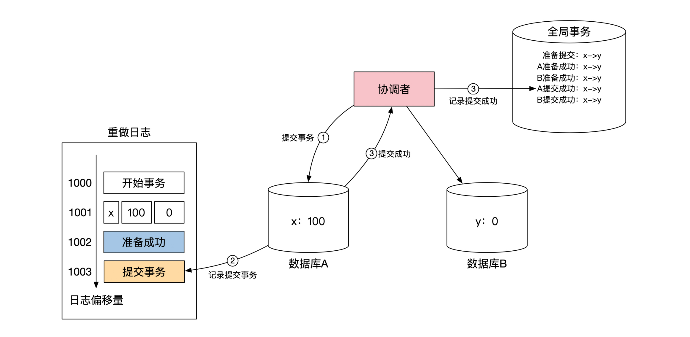

- 00 开篇词 如何成为金融级人才？.md.html
- 01 业务初探：扫了二维码之后发生了什么？.md.html
- 02 原理解读：如何理解第三方支付的业务逻辑和系统组件？.md.html
- 03 产品大观：不同金融业务都有哪些技术实现要点？.md.html
- 04 领域驱动设计（上）：如何设计金融软件顶层架构？.md.html
- 05 领域驱动设计（下）：如何设计统一的金融业务模型？.md.html
- 06 计算输入的正确性：怎么选择正确时间的数据？.md.html
- 07 计算过程的正确性：如何设计正确的数据处理架构？.md.html
- 08 计算结果的正确性：怎么保证计算结果是正确的？.md.html
- 09 数据传输的质量：金融业务对数据传输有什么要求？.md.html
- 10 数据存储的合理性：金融业务可以不用关系型数据库吗？.md.html
- 11 系统优化：如何让金融系统运行得更快？.md.html
- 12 正确性分级（上）：单机无备份有哪几种不同的一致性？.md.html
- 13 正确性分级（中）：多机无容灾有哪几种不同的一致性实现？.md.html
- 14 正确性分级（下）：多机有容灾有哪几种不同的一致性？.md.html
- 15 分布式正确性的存在性（上）：什么情况下不存在分布式共识算法？.md.html
- 16 分布式一致性（下）：怎么理解最简单的分布式一致性算法？.md.html
- 17 正确性案例（上）：如何实现分布式的事件溯源架构？.md.html
- 18 正确性案例（中）：常见分布式数据方案的设计原理是什么？.md.html
- 19 正确性案例（下）：如何在运行时进行数据系统的动态分库？.md.html
- 20 容灾（上）如何实现正确的跨机房实时容灾？.md.html
- 21 容灾（下）：如何通过混沌工程提高系统稳定性？.md.html
- 春节策划第1期 分布式金融系统知识，你掌握了多少？.md.html
- 春节策划第2期 读书如抽丝，为你推荐一些我读过的好书.md.html
- 春节策划第3期 如何运用架构知识解读春运买票和手游案例？.md.html
- 答疑集锦（一） 思考题解析与外汇架构知识拓展.md.html
- 答疑集锦（三） 思考题解析与数据库底层实现.md.html
- 答疑集锦（二） 思考题解析与账务系统优化.md.html
- 结束语 金融之道，与你同行，虽远尤欣.md.html
- 捐赠
答疑集锦（三） 思考题解析与数据库底层实现
你好，我是任杰。
到今天为止，我们最后一个模块，分布式正确性及高可用的内容就结束了。恒者行远，思者常新。积极思考是学习精进的重要一环，所以这里我要特别表扬积极留言、主动学习的同学，相信你一定会更有收获。
今天我为你准备了这篇加餐，把第三模块的思考题做一个系统梳理。我还是建议你先看完前面每一讲的内容，自己做了思考之后再看我这份参考答案。
思考题答案
Q：快照隔离虽然比可串行化的级别要低一些，我们也是可以稍作调整就达到可串行化的能力，这个做法叫作串行化快照隔离（SSI，Serializable Snapshot Isolation）。
SSI主要需要检查的是读写和写读冲突，像下面这幅图展示的一样。那你知道怎么才能正确地找到这些冲突吗？

A：数据库需要记录下来你都读了哪些数据。这样在其他事务写的时候，就能判断是否会对你的读造成了影响。在这里我们要分两种情况考虑。
第一种情况是上图左边的情况。这时候数据库需要知道T1的写入操作会影响哪些还没有结束的事务。数据库需要保留读的信息。
第二种情况是上图右边的情况。这时候数据库需要记录T1的读操作忽略了哪些相关的、还没有结束的事务。这时候如果T1还有任何写的操作，那么就需要考虑将T1回滚。需要你注意的是，如果T1一直只是读取数据，没有任何写的操作，那么T1是不需要回滚的。
Q：在两阶段提交的情况下，协调者的全局事务数据库可能会出现数据丢失，这时候协调者也是可以根据所有节点的情况来反推出自己应该做什么。你知道协调者应该怎么做吗？
A：协调者这时候需要对所有节点的情况进行一次普查。
如果至少有一个节点进入了第二个阶段，那么所有节点都进入了第二个阶段。这时候如果有一个节点进入提交状态，所有节点都需要提交。如果有一个节点进入了取消状态，那么所有节点都需要取消。
如果所有节点都停留在第一阶段，那么就没有这么容易判断了。
如果至少有一个没有记录“准备成功”的标志，那么事务的第一个阶段还没有结束，因此可以回滚分布式事务。
最复杂的情况在于所有在线的节点都记录了“准备成功”。这时候可能有的节点并不在线，你不知道它们都处在什么阶段，因此需要灵活处理。
Q：我们这节课的思考题很简单。如果让你来实现分布式环境下的严格可串行化，你能想到什么办法呢？
A：如果不考虑执行效率的话，最简单的实现方式是，利用分布式锁来锁定对所有分布式数据库的访问。全局只有一个锁。只有拿到了锁，分布式事务才能开始。
Q：我们在最开始提到过，1996年的论文“Unreliable failure detectors for reliable distributed systems”证明了，如果分布式系统存在一个能让你最终做出准确判断的不准确时钟，那么系统存在共识算法。这个时钟其实起到的作用是在分布式环境下检测机器是否出问题。
失败检测分为两种属性：完整性和准确性。按照排列组合，这两种属性一共有4种可能的情况：
- 强完整性。所有正确的节点都会最终怀疑每个出错的节点。
- 弱完整性。一些正确的节点都会最终怀疑每个出错的节点。
- 强准确性。所有正确的节点都不会被怀疑说出了问题。
- 弱准确性。一些正确的节点不会被怀疑说出了问题。
论文指出来，就算是只有很弱的失败检测，也能实现共识算法。那么你觉得这里的“弱”指的是哪几种情况呢？
A：需要弱完整性和弱准确性。
Q：为了提高分布式事务的容灾能力，我们需要解决协调者的单点问题。那么问题来了：
- 你能分析一下，这个问题的本质是我们这节课讲的哪个问题吗？
- 如果你要解决单点问题的话，可以怎么解决呢？
A：这个问题的本质是数据库日志在分布式环境下的线性化存储。因此需要用共识算法来复制日志文件。
Q：读模式的状态机需要复制事件队列。在复制的时候一定有两个选择，一个是主动将事件队列拉过来，另一个是将事件队列推过来。那你是会选择推还是拉呢？不同选择都有哪些优缺点呢？
A：选择有两个点。一个是延时，一个是谁付出成本。
对于延时来说，推一般是实时推送数据，延时低。而拉是批量拉，吞吐量大，但是延时高。
成本有两个方面，一个是计算成本，一个是系统复杂度。从计算成本考虑，推需要写模式节点需要付出成本，而拉则是读节点。
从系统复杂度考虑，在推送的反思下，写模式节点需要维护数据消费者当前的数据消费偏移量，然后根据这个偏移量来选择是否重发。当消费者个数比较多的情况下，写模式节点的压力会比较大。在拉取的模式下，读模式节点只需要维护自己当前的消费情况。
关系型数据库有这几个关键的功能：
- 表存储
- 主索引和二级索引
- 缓存
- 表的复制和容灾
- 表查询
- 单机事务
- 分布式锁
- 分布式事务
如果要求你用现在市面上常用的数据解决方案来拼凑一个分布式关系型数据库，你应该如何选择，如何搭配呢？
A：表的存储和主索引用rocksdb。二级索引也可以用rocksdb。缓存可以用redis。表的复制用kafka。表的查询用clickhouse。分布式锁用zookeeper或者etcd。简单的单机事务可以用rocksdb实现。
两阶段提交的分布式事务没有开源方案，但是TCC可以通过业务系统来实现。
Q：在分布式环境下所有的机器都有可能出问题，协调者也不例外。比如说，协调者可能因为网络原因给集群重复发送了多个分库命令。这样会影响整个分库过程的正确性吗？
A：答案是不会影响。分库命令唯一的副作用是修改集群内的配置信息。配置信息的修改具有幂等性，因此多次操作和一次操作结果一样。
除了三地五中心之外，还有一种容灾能力更高的部署方式，那就是三地九中心，Google曾经采用过这种部署方式。
三地九中心并不是直接部署9个Raft节点，而是将Raft节点分为了两层。下面一层按照3个一组分为了3组，分别放在3个数据中心。每个数据中心的3个节点刚好组成一个Raft集群，通过Raft选主的方式选出来一个主节点。
这样3个数据中心就一共有3个主节点。这3个主节点之间刚好也可以形成一个Raft集群，再选出一个级别更高的Raft主节点。这个唯一的主节点负责代表集群对外提供服务。下面这幅图展示了三地九中心的部署方式。

那么，你觉得这个三地九中心部署方案有哪些优点呢？
A：最主要的优点是减少了跨城带宽使用量。三地九中心和三地五中心具有一样的城市级容灾能力。但是在三地五中心的情况下，主节点需要负责将数据同步到3个其他城市的节点，而在三地九中心的情况下，主节点只需要同步2个其他城市的节点。
Q：我们的最后一道思考题也很简单。我在最开始介绍过Raft算法有无限种状态，因此无法通过形式语言来证明这个分布式算法的正确性。那么Raft的无限种状态指的是什么状态呢？
A：Raft的日志文件是Raft的状态之一。日志文件可以不断增长，因此长度是无限的。准确来说日志的长度是可数的（Countable），但是由于每个日志的内容可以有多种类型，整个日志的状态是不可数的（Uncountable）。
为什么分布式数据库需要数据库的特殊支持？
还记得我在第13节课给你留了一个彩蛋么？表面上看，我们可以在任何一种数据库上实现两阶段提交。其实并不是这样的，两阶段提交的实现需要数据库底层的特殊支持。
在这个加餐里，我来补充一下数据库的一些底层实现，以及如何加强这些底层实现来实现两阶段提交。如果你学有余力，可以拓展学习。
事务实现细节
现在数据库事务基本是靠重做日志（Redo Log）来实现。重做日志和我们第7节课讲的事件溯源的日志文件完全一样。数据库把所有操作记录到日志文件上，当机器出问题之后，机器的自动机逻辑会依次读取日志文件的内容，选择性地提交事务或者回滚事务，这样就能将机器恢复到最后的正确状态。
每个事务开始的时候，数据库会在重做日志上记录一行 开始事务 。接下来就是对数据库内容的修改，数据库并不会马上修改数据，而是先在重做日志上记录修改的操作，然后才真正在数据库内修改数据。最后，事务提交的时候会记录一行 事务提交 ，或者当事务回滚的时候留下一行 事务回滚 的记录。
这里有一个细节，在重做日志上，数据库的修改并不会简单记录修改后的值，而是会记录修改前和修改后两个值。修改前的值用来做事务的回滚操作，而修改后的值用来做事务的提交操作。用事件溯源的观点看，可以这样理解：重做日志上会记录当前值的信息和对值的操作。
这里给你举个例子。假设我们通过一个事务将数据库 A 里 x 的值从100变为0 。伪代码如下：
begin transaction
update A set balance= 0 where accountID='x'
end transaction
数据库收到这个SQL之后，会先在重做日志文件里记录一行 开始事务 ，然后再记录一行 x 的前后变化，最后记录一行 事务提交 后返回。整个重做日志的内容如下图所示：

这是一个最简单的常规情况，这时候重做日志似乎没发挥什么作用。但是当数据库出问题了之后，重做日志就能发挥巨大的作用。
还是这个例子，一共可能在3个地方出现问题，一个还是记录了 开始事务 之后，一个是在记录了 x 的前后变化之后，最后一个地方是在记录了 事务提交 之后。下面这幅图给你展示了这3个可能会出问题的时间：

接下来，我们分别来看这三种情况。如果问题是出在记录了 开始事务 之后，这时数据库还没有对数据做任何操作，所以数据库在恢复的时候可以什么都不做。
如果问题出在记录了 x 的变化之后 ，数据库就需要回滚所有对 x 操作。这时候数据库需要用重做日志里 x 的初始值100来覆盖现在数据库里的 x 的值。这时候不管 x 是什么值，覆盖的操作都是正确的。
如果问题是出在记录了提交事务之后，那么数据库需要重新执行所有操作。这时数据库需要用重做日志里 x 变化后的值0来覆盖现在数据库里 x 的值。
这就是重做日志里“重做”的真正含义，我们通过从头到尾重新执行一遍日志的操作，就能将数据库恢复到正确的状态。
两阶段提交实现细节
在在第13节课讲2PC的时候我提出过一个问题，这里我们快速回顾一下。在第一阶段完成之后，第二阶段开始之前，单个节点的数据库可能会出问题，这时候会出现本地数据库回滚，这样会导致第二阶段执行的时候数据丢失。那该怎么办呢？
当时我预告过，这个内容我会在第三模块的加餐里给你详细讲解，现在就是揭秘的时候了。
我曾经说过两阶段提交是偏底层的实现，原因是两阶段提交需要扩展重做日志的内容。原始的重做日志分别使用开始事务 和 事务提交 这两个特殊记号，表示事务执行的状态。两阶段提交需要增加一个特殊标记，叫作 准备成功 。
准备成功 这个标记意味着数据库到达了一个中间状态。当数据库出问题准备恢复的时候，如果出现了 准备成功 的标记，那么这个事务不会在恢复的时候回滚，这一点和事务提交这个标记的作用类似。
但 准备成功 并不代表事务处于可以提交的状态，所以它的出现并不会让事务释放自己的锁。想要真正提交事务，还要等协调者发过来的第二阶段的提交消息。
下面这幅图展示了前面转账例子里，第一阶段在数据库 A 的细节，重点在第5步。
当数据库 A 将对 x 的操作记录到重做日志之后，会在重做日志里记录一个 准备成功 的标记，然后返回给协调者自己已经准备成功的消息。数据库 B 的情况完全一样，所以这里我没有画出来。

当第一阶段都成功完成之后，协调者开始第二阶段。下面这幅图展示了第二阶段在数据库 A 的细节，重点在第2步。当数据库 A 收到了协调者给的提交事务的指示后，数据库 A 在重做日志内记录一个事务提交的记号，这表示本地事务真正提交了。数据库 B 的情况也完全一样，所以没有画出来。

好了，第三模块的思考题我们就说到这里，希望能给你带来新思路。也欢迎你继续积极思考，通过留言区跟我交流互动。
© 2019 - 2023 Liangliang Lee. Powered by gin and hexo-theme-book.